This is the design of goal2's interface, made before anything is rebuilt (design phase #524, task T157, issue
#526). It starts from the original: its flow screen by screen, as one uninterrupted sitting shows it
(playthrough, run T156-R1), and the other chapters of
docs/original-game. Today's window is used only in section 4,
to say what it keeps, changes and drops. [designed: owner, 2026-11-02, #523, #524]
The design follows the original exactly: its decisions, information, layout and keys, in the same order.
It departs only where a DOS limit forced the original's way or where the owner hit a problem in the playtest
(#523), and each departure is tagged [designed] with its reason (the rule). The
look is the original's: its own palette and a blocky VGA-style font, on a modern, readable layout. It chooses no toolkit
and no technology; that is T158. [designed: owner, 2026-11-03, owner decisions, 2026-11-03, #526]
Contents:
- The player's journey
- Every screen, S01 to S22, each with its mockup
- Rules for the whole UI
- What today's window keeps, changes and drops
- The mapping of every original screen
- Decisions (owner, 2026-11-03)
The mockups are static pages at desktop size (1440×900), written by
mockups/build.py into mockups/*.html with mockups/style.css, and
rendered to images/. Their colours are read from the captures by palette.py and their font is
vendored in mockups/fonts/. They are pictures of the design, not app code. Their names, scores and fixtures are those
of run T156-R1 so that each can be read beside the capture it replaces; skill values and a few figures are
illustrative. Regenerate with python3 docs/design/ui-2026-11/mockups/build.py --render <chrome binary>.
[designed: T157]
The mapping check. check_mapping.py reads every classified screen of the
screen inventory and every original image embedded in the chapters
(the playthrough's included), and checks that the table in section 5
maps each to a new screen or drops it with a reason. It also checks that every new screen has its section here
and an embedded mockup. python3 docs/design/ui-2026-11/check_mapping.py exits 0 only when nothing is missing.
[designed: T157]
Evidence notation is the original-game chapters' own: T156-R1 step N is a step of the uninterrupted run,
E031 Cnn a claim of the observed-claims register, E015-r… state S and M244-… step S other captures.
[designed] marks a choice of this design. [confirmed: docs/original-game/README.md]
1. The player's journey
From the first start to a played season, the player meets these screens in this order. Each step names the original screen it replaces, from T156-R1 unless said otherwise. [designed: T157]
flowchart TD
imp[S01 Import your data, first start only] --> start[S02 Start: continue, load or new]
start -->|N new game| count[S03 How many managers]
start -->|Enter continue, or Y and a save| desk
count -->|Enter| country[S04 Country and manager's name]
country -->|Enter, name, Enter| news[S05 Bulletin]
news -->|Enter| desk[S06 Manager's desk]
desk -->|team info| team[S07 Team info]
desk -->|Space select squad| squad[S08 Squad and pool]
squad -->|T| ptac[S09 Player tactics]
desk -->|T| ttac[S10 Team tactics]
desk -->|fixture list| fix[S11 Fixtures]
desk -->|tournament| tour[S12 Tournament]
desk -->|history| hist[S13 History]
desk -->|F7 / F10 / F3 / F4| save[S21 Save, quit, load goal or summary]
desk -->|F1| help[S22 Help]
desk ==>|Enter play next game| round[S14 Round results]
round ==>|Enter| menu[S15 Match menu]
menu -->|players| bench[S19 Bench]
menu ==>|Enter play| captain[S16 Choose captain]
captain ==>|Enter or C| pitch[S17 Pitch]
pitch -->|stops: goal, injury, set piece| stop[S18 Match stop]
stop --> pitch
stop -->|any key, your player injured| menu
pitch -->|half time, full time| board[S20 Match board]
board -->|Enter| menu
menu ==>|exit after full time| board
board ==>|Enter| news
news ==>|Enter| desk
The thick arrows are the match day: play next game on the desk, then Enter through the round, the match menu (play) and the captain to kick-off. Your own matches are watched; nothing asks whether to watch them unless the original asks. [confirmed: T156-R1 steps 36–45, 262–266; designed: owner decision 1, #526]
| # | Original screen (capture) | Decision in the original | goal2 screen | Same decision? |
|---|---|---|---|---|
| 0 | — | — | S01 Import | goal2 adds it: the data files are imported once, on the first start, because no original file ships with goal2 (CLAUDE.md rule 14; T153). |
| 1 | Title, load a saved game? (step 0) | Y load / N new | S02 Start | Same Y and N; departs [owner decision 4]: Continue (Enter) for the last save, and a list of saves by free names instead of typing a file name. |
| 2 | Load name (step 243) / file not found | which save; retry | S02 Start | Same, as a list; a save that fails says why, with Y try again / N back. |
| 3 | How many players (step 1), HANG ON A TICK (step 2) | 1–6 managers | S03 New game | Same, hot seat. Departs [owner decision 9]: one optional field for the starting year, the PC clock's year by default as the original takes it (NG-9). |
| 4 | Country browser (steps 3–5) | which country | S04 Country | Same, with the card and the list together. |
| 5 | Name entry (steps 6–10) | manager's name | S04 Country | Same, on the same screen, as in the original (an overlay of the browser). |
| 6 | Bulletins (steps 11–12) | read the news | S05 Bulletin | Same. |
| 7 | Hub (step 13) | what to do next | S06 Desk | Same: the landing page with all six options visible, play next game among them, the cursor on team info, the same F-keys. |
| 8 | Squad and pool (steps 14–29) | who is in the twenty | S08 Squad | Same keys and the same two-Enter exchange. |
| 9 | Player tactics (step 30) | one player's tactics | S09 Player tactics | Same. |
| 10 | Team tactics (steps 33–34) | the team's tactics | S10 Team tactics | Same. |
| 11 | Round results so far (step 41) | — (read) | S14 Round | Same. |
| 12 | Match menu (step 42) | inspect, change, play | S15 Match menu | Same; play names what follows ("choose your captain"). |
| 13 | Captain card (steps 43–45) | the captain | S16 Captain | Same keys; changed: the screen says that kick-off waits for this choice (#523). |
| 14 | Pitch (steps 45–118) | speed, display, result, bench | S17 Pitch | Same keys; the pitch is in the main window. |
| 15 | Taker cards (steps 46, 56) | taker, or C | S16 (same stop, other title) | Same, including the timeout. |
| 16 | Substitution opportunity (step 67) | go to the bench | S18 Match stop | Same. |
| 17 | Bench (steps 74–81, 124–132) | substitutions | S19 Bench | Same keys; the bench says its mode (request or make now) and the step of the exchange. |
| 18 | Half-time / full-time board (steps 119, 192) | — (read) | S20 Board | Same. |
| 19 | Replay and save-goal questions (steps 175–178) | replay? save? name | S18 Match stop | Same three questions, in one box. |
| 20 | Full-time menu, exit (steps 193–198) | stats; exit | S15 Match menu | Same. |
| 21 | Save the summary? name (steps 198–199) | save? name | S20 Board, S21 name box | Same. |
| 22 | Bulletin (step 200), hub (step 201) | — | S05, S06 | Same. |
| 23 | Fixture list, tournament (steps 224–231) | which matches to watch; standings | S11, S12 | Same. |
| 24 | F7 save, F10 quit (steps 233–241) | name; quit? save? | S21 | Same. |
| 25 | Reload (steps 242–244) | which save | S02 | Same, as in rows 1–2. |
| 26 | F3 saved goal (steps 245–256) | which goal | S21 name box, S15, S17 | Same. |
| 27 | Round two: results, menu, captain C, R quick result (steps 262–313) | quick result | S14, S15, S16, S17, S20 | Same; R on the pitch, as in the original. |
| 28 | Group table, bulletin, hub (steps 316–318) | — | S12, S05, S06 | Same. |
A season goes on like rows 7–28: the desk, the round, the match, the news, the desk. At the year's end the original shows the remaining results, winners and a new stage on the desk (E031 C54–C56, M244-G1E-06 steps 14–19): goal2 shows them on S14, S12 and S05 in the same order. [confirmed: T156-R1 steps 0–321; E031 C54–C56; M244-G1E-06 steps 14–19]
Multi-manager play. With more than one manager, S04 repeats for each, and the desk gains next player, which hands the desk to the next manager. [confirmed: E031 C16–C16b] The design keeps it: 1 to 6 managers, hot seat, as the original. [owner decision 5, #526]
The bot (idle play, plan G-M5) is left out of this design; where it goes is decided later. [owner decision 6, #526]
2. Every screen
Each screen lists its purpose, what it shows, its actions and keys, and the original screens it replaces (all of them are in section 5). A key in bold is the original's own. Enter does the highlighted choice; the right end of the bottom bar says what that is now, as the original's hint line does ("◄┘-move player", "Hit ◄┘ to watch match").
S01 Import your data
- Purpose: on the first start only, take the player's data files into goal2's data folder. goal2 adds it [designed: owner, 2026-11-02, T153].
- Shows: the files needed, what each is for, and for each the result of its check (found and verified, missing, wrong). What is wrong is said in plain words. The files include the original's GOAL.HLP, the help text that F1 shows (S22). [designed: owner, 2026-11-03, #526; the import itself changes in T153's code]
- Actions: Choose folder… (Enter), Quit (Esc).
- Replaces: no original screen. The DOS prompt before the game (
dos-shell) is not a game screen and is dropped.
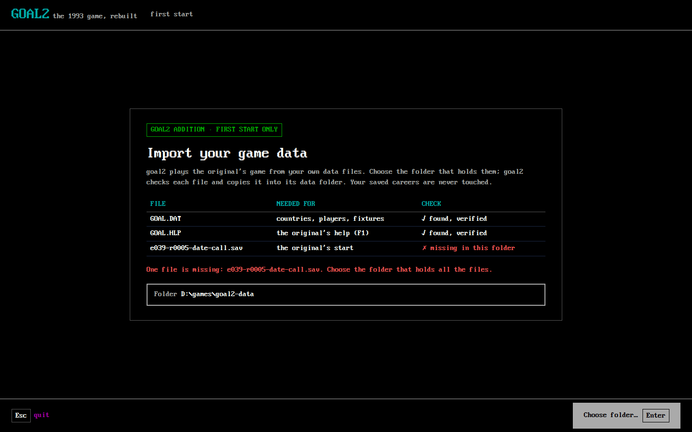
S02 Start
- Purpose: the title's question, load a saved game?, with the obvious answer first.
- Shows: Continue with the last save's country, manager, next match and time saved; the title's choices; the list of saved games with country, year and stage, next match and time.
- Actions: Continue (Enter; owner decision 4); Y load the highlighted save; N new game; ↑↓ choose a save; Esc quit. A save that cannot be opened says why on this screen, with Y try again and N back.
- Replaces:
title-load-prompt, the load name (m244-load-name,t156-243-load-name) andfile-not-found-prompt. [confirmed: T156-R1 steps 0, 242–244; E031 C11–C12; E015-r0008 state 10] - Departs [designed: owner decisions 4 and 8, #526]: the title asks Y/N and then for a file name, pre-filled with the one save (step 243); goal2 offers Continue and lists the saves by the free names they were saved under. With no save, the screen offers only New game.
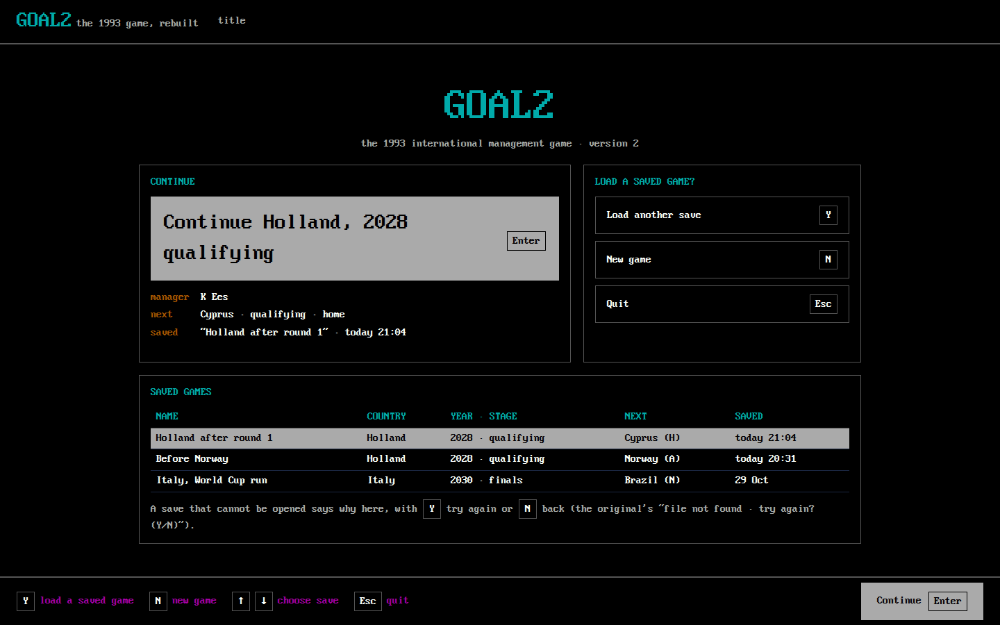
S03 New game: how many managers
- Purpose: the number of local managers, 1 to 6.
- Shows: the six numbers, the highlighted one chosen; one optional field, the starting year; then a busy line while the game is prepared. Managers play in turn (hot seat).
- Actions: ←→ number, Enter accept, Tab to the year field, Esc back to S02.
- Departs [designed: owner decision 9, #526]: the original takes the year from the PC clock without asking (NG-9). goal2 does the same by default, and the one optional field lets the player change it. Today's 1990/1992 list goes.
- Replaces:
title-player-count,t156-002-hang-on-a-tick. [confirmed: T156-R1 steps 1–3; E031 C12]
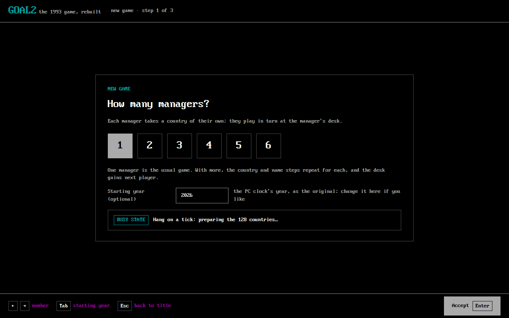
S04 Country and manager's name
- Purpose: choose the country, then type the manager's name.
- Shows: the country card as in the original: status, manager, world and continental ranking now and top, formation, skill, the level of difficulty, the team's skills and performance bars, team tactics and player defaults, characteristics with their words, average caps and age; the country list in groups of 16; the name line (14 characters at most) once a country is chosen.
- Actions: ↑↓ country, ←→ next group of 16, Ins world or continental ranking, Space the country's players (the S08 card, read only), Enter choose, then Enter accept the name, Esc abort the name / back.
- Replaces:
country-select,country-select-name-entry,t156-005-country-holland,t156-006-name-entry,t156-010-name-typed. [confirmed: T156-R1 steps 3–11; E031 C13–C15b]
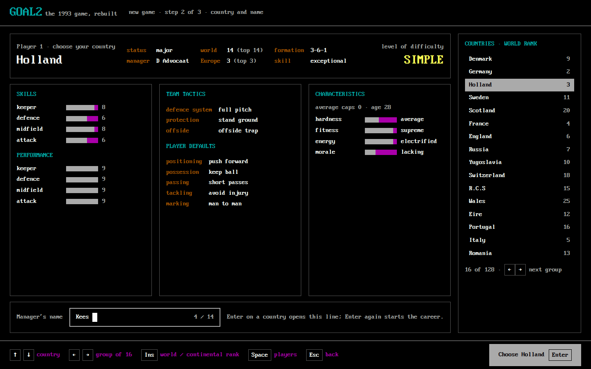
S05 Bulletin
- Purpose: the news: a new manager, the groups, after each round, at the end of a stage.
- Shows: the Soccer Bulletin's three panels, page n of m.
- Actions: Enter (any key) next page.
- Replaces:
bulletin,t156-011-bulletin-welcome,t156-012-bulletin-groups,t156-200-bulletin-after-match,t156-317-bulletin-round2,m244-elimination-bulletin. [confirmed: T156-R1 steps 11–12, 200, 317; M244-G1E-06 step 18]
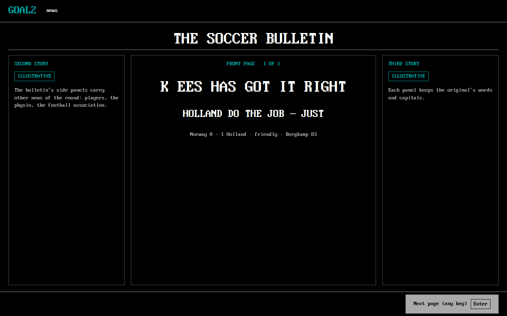
S06 Manager's desk
- Purpose: the hub. Everything starts and ends here.
- Shows: the manager (name, rating); the team and its rankings; the next opponents, their rankings and the kind of match (friendly away, qualifying home…); the managers; the six options; the twenty players with role codes, the eleven above the bench. Every action is on this page: nothing that the original's hub offers is behind another screen.
- Actions: ↑↓ option, Enter open it; Space select squad; T team tactics; F1 help, F3 load a saved goal, F4 load a saved summary, F7 save, F10 quit; next player with more than one manager.
- Cursor: starts on team info, as the original's (T156-R1 step 13). play next game is the last option; your own match is watched by default, and the desk has no watch control, because the original has none. [confirmed: T156-R1 steps 13, 36–42; owner decision 1, #526: today's Watch match button hid how to play]
- Replaces:
manager-menu,t156-013-hub,t156-201-hub-after-round1,t156-244-loaded-hub,t156-318-hub-round2,m244-holland-menu,m244-finals-stage-hub. [confirmed: T156-R1 steps 13, 201, 244, 318; M244-G1A-02 steps 2–11; E031 C17–C26] - Dropped: F5 print screen, which the system's own screenshot replaces.
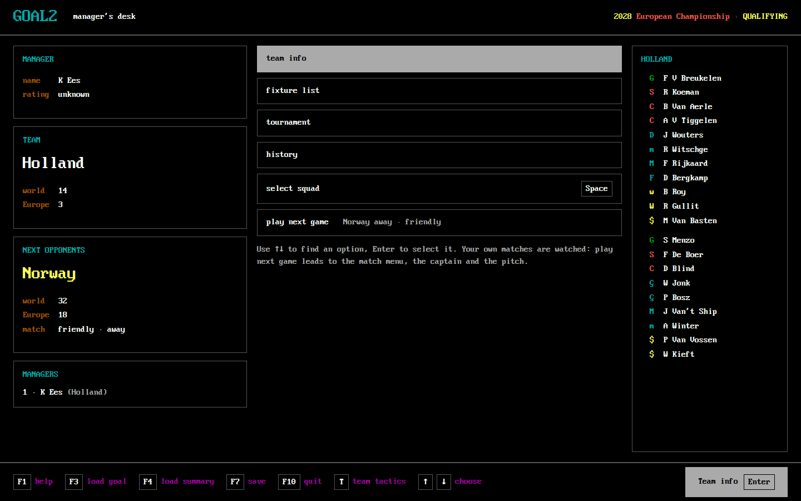
S07 Team info
- Purpose: check out all the competitors.
- Shows: any country's card (the S04 card) and the country list, the next opponent marked.
- Actions: arrows country, Ins ranking, Space that country's players (the S08 card, read only), T its tactics, Enter its fixtures, Esc desk.
- Replaces:
m244-team-info-2030,m244-team-info-players-2030. [confirmed: M244-G4C-05 steps 2–6]
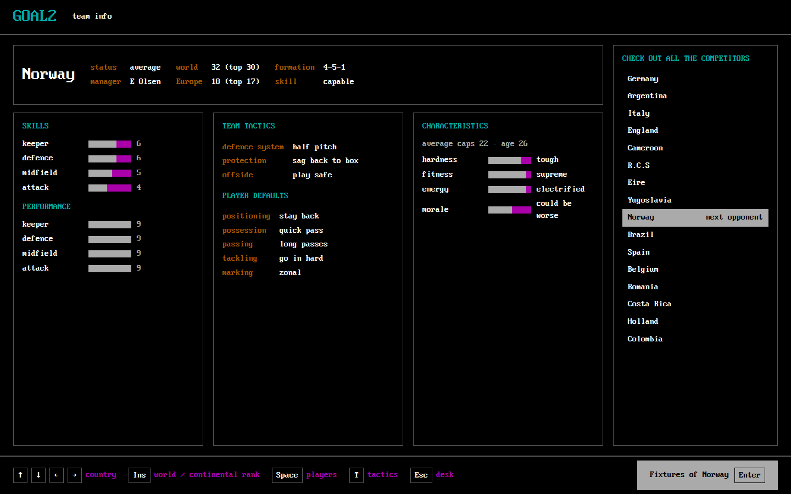
S08 Squad and pool
- Purpose: who is in the twenty, in what position.
- Shows: the player card (name, age, caps, goals, height, foot, performance, position and club position, cards, readiness; twelve skills, his tactics, five characteristics with their words); the twenty or the pool on the right. Once a pool player is picked, the Enter hint reads put here, as in the original (T156-R1 step 17).
- Actions: ↑↓ player, ←→ squad / pool, Enter move player (Enter on a pool player, ← back, Enter on the player he replaces), Ins the assistant's recommended 20, R next position (Shift+R back), C club position, T his tactics, F2 new name, Esc desk.
- Replaces:
m244-squad,m244-squad-next,m244-pool,m244-pool-next,m244-position-next,m244-position-club,t156-014-squad,t156-016-pool,t156-017-pool-put-here,t156-029-pool-pick-done,t156-202-card-recovered,t156-320-card-recovered-round2. [confirmed: T156-R1 steps 14–29, 202, 320; M244-G1A-02 steps 3–9; M244-G1A-04 steps 4–6; E031 C27–C31; Shift+R: designed, owner, #423]
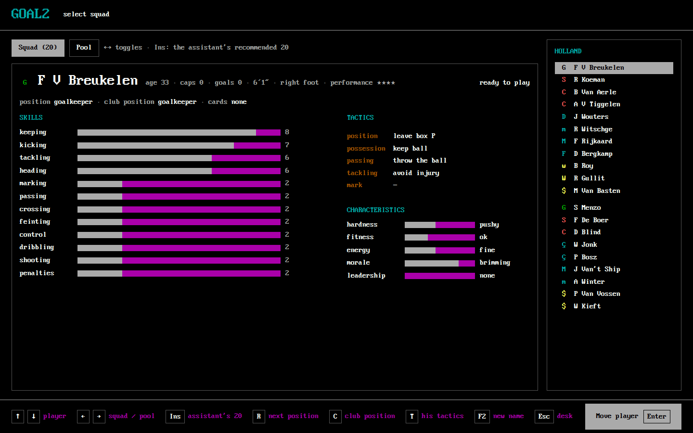
S09 Player tactics
- Purpose: one player's own tactics: position, possession, passing, tackling, mark.
- Shows: the five lines and their values, P on a line set for this player; his skills and characteristics beside them.
- Actions: arrows line, Enter alter, Esc back to the card. Reached by T from S08 and from the bench S19.
- Replaces:
m244-individual-tactics,m244-position-tactic-toggle,mark-protect-zone,mark-named-opponent,squad-substitution-tactic,t156-030-player-tactics. [confirmed: T156-R1 step 30; M244-G1A-04 steps 7–12; E015-r0007 states 150, 165–166; E031 C33–C33d]
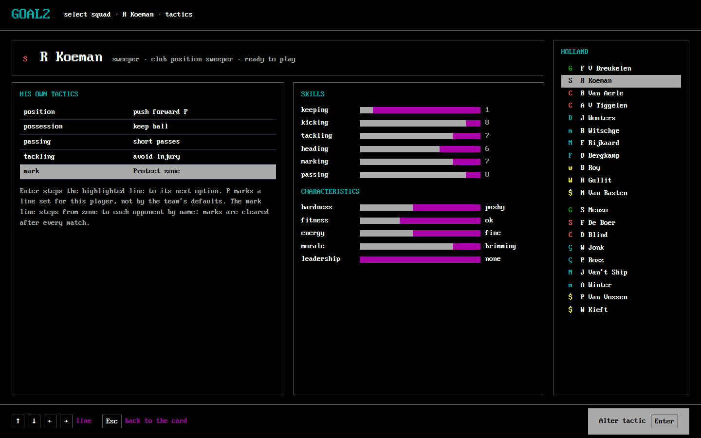
S10 Team tactics
- Purpose: the team's eight lines: defence system, protection, offside, then the player defaults.
- Shows: each line, its value now and the other option; the formation; the characteristics.
- Actions: ↑↓ line, Enter change, Esc desk.
- Replaces:
team-tactics,m244-team-tactics,t156-033-team-tactics,t156-034-team-tactic-changed. [confirmed: T156-R1 steps 33–35; M244-G1A-02 step 11; E031 C07]
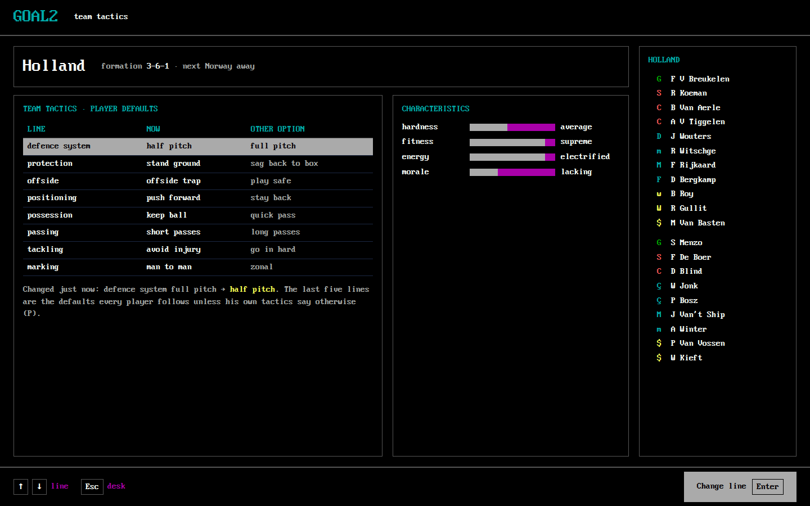
S11 Fixtures
- Purpose: the coming round, and which other matches to watch.
- Shows: each fixture with its kind, ✓ on the matches to watch, and for the highlighted row what Enter will do (watch match, auto result; cancel or rearrange on your own friendly).
- Actions: ↑↓ scroll, Enter the named action, Esc desk.
- Replaces:
fixtures-watch,fixtures-auto,m244-fixtures,m244-fixtures-watch,t156-224-fixture-list. [confirmed: T156-R1 step 224; M244-G1A-03 steps 4–5; E031 C17–C18]
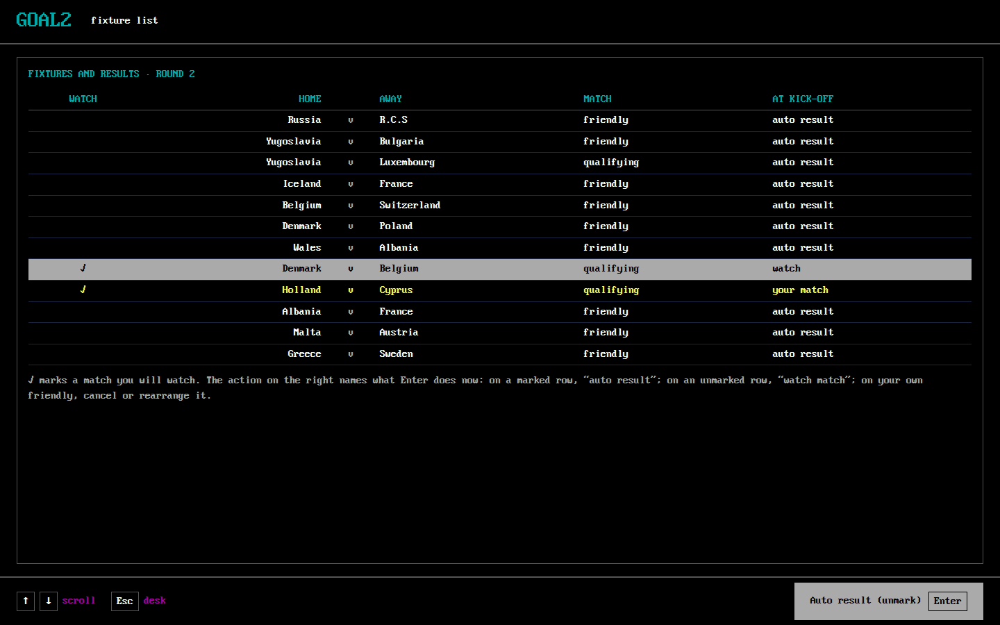
S12 Tournament
- Purpose: the groups, their tables and matches, the finals and the bracket.
- Shows: the display (Qualifying, Finals, Championship) and the continent, as tabs; the group table (P W D L F A T) beside the group's matches; on Finals the top scorers; on Championship the bracket.
- Actions: ↑↓ group, Space continent, ←→ display, Ins Championship results (where the original prints it), Esc desk. Read only.
- Replaces:
m244-tournament-group-f,m244-tournament-group-g,m244-world-finals-bracket,m244-world-qualifying-a,m244-world-qualifying-b,m244-final-qualifying-table,t156-227-tournament-europe,t156-228-tournament-americas,t156-229-tournament-finals,t156-230-tournament-championship,t156-316-group-table. [confirmed: T156-R1 steps 227–231, 316; M244-G1A-03 steps 8–9; M244-G4C-05 steps 9–11; M244-G1E-06 step 14]
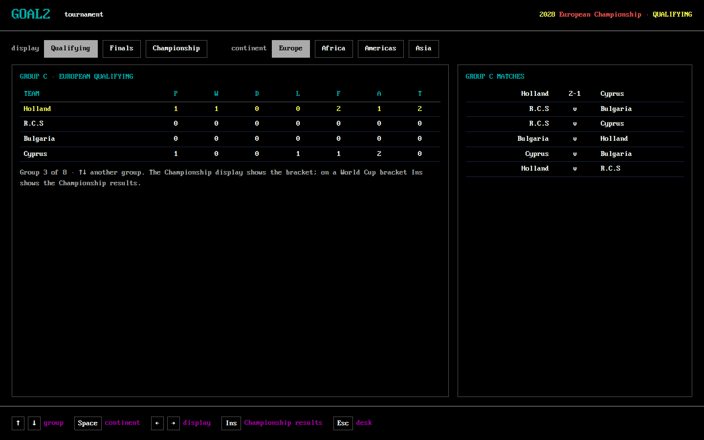
S13 History
- Purpose: how the country has done over the seasons.
- Shows: runs of wins and defeats home, away and all, now and top; successes; results by season with the best place; top scorers and caps; the biggest wins and defeats.
- Actions: Esc desk. Read only.
- Replaces:
m244-history. [confirmed: M244-G1A-03 step 12]
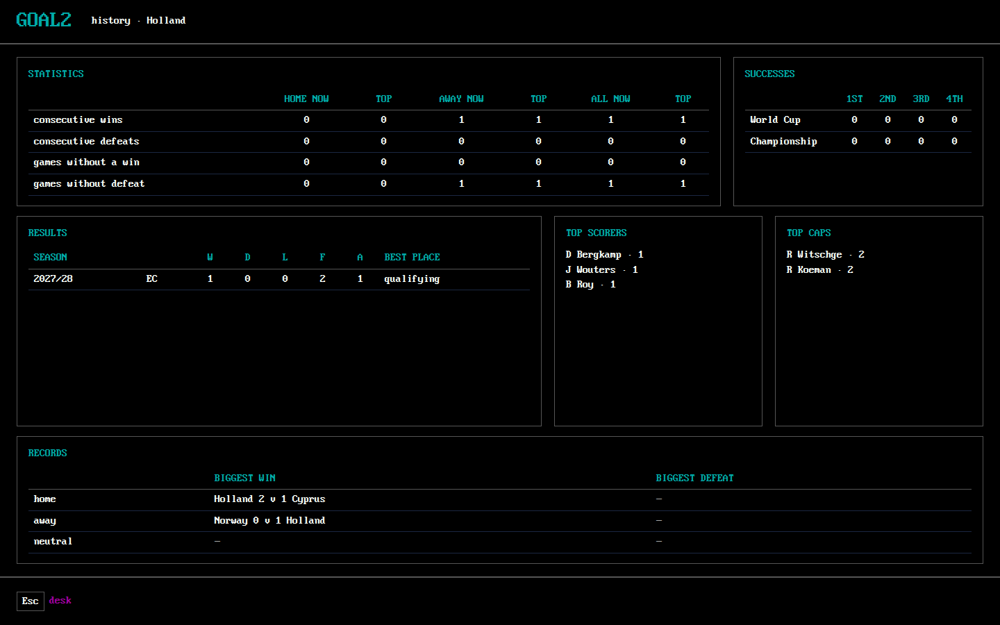
S14 Round results
- Purpose: the round's other results, arriving one by one, before and after your match.
- Shows: each result with its kind; your match, still to play, at the end.
- Actions: Space pause, ←→ speed, Enter (hit any key) to your match.
- Replaces:
round-playing,round-results,t156-041-round1-results,t156-262-round2-results-rolling,t156-263-round2-results. [confirmed: T156-R1 steps 41, 262–263; E015-r0007 states 27, 52]
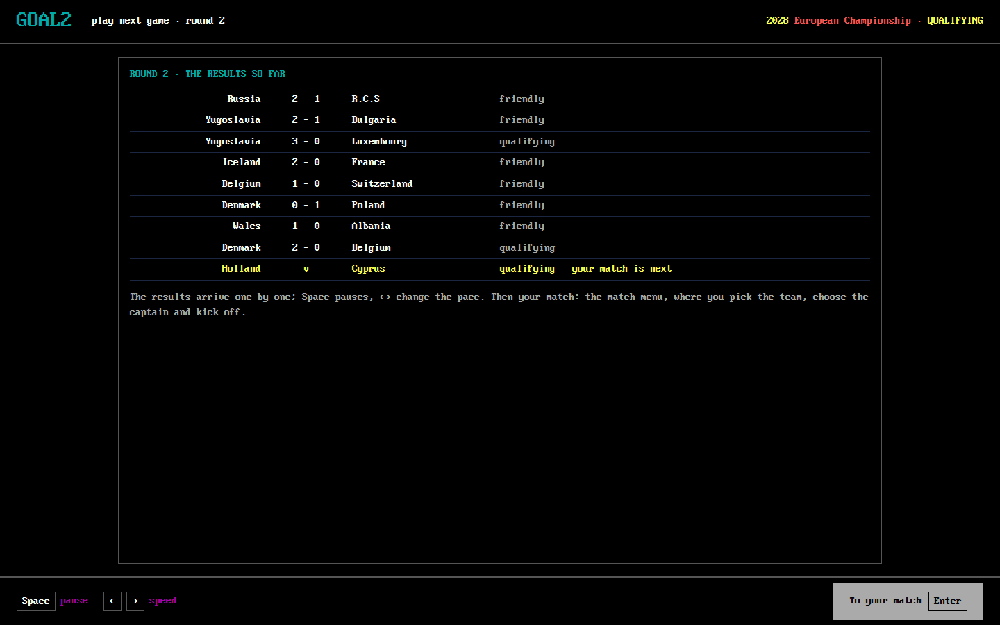
S15 Match menu
- Purpose: before kick-off, at half time, at full time and before extra time: compare the sides, change yours, then play.
- Shows: the score, the kind of match, the location, the time (HALF TIME, FULL TIME, EXTRA TIME); both formations and elevens; the actions, with play highlighted first as in the original (step 42): each side's team tactics and players, tournament, match stats, and play (before and during) or exit (after the final whistle); automatic action replay ON/OFF.
- Actions: arrows choose, Enter open; Ins action replay on/off. play names what follows: "choose your captain, then kick-off" before the match, "second half" at half time. [designed: #523, the owner did not know that kick-off waits for a captain]
- The watch question. When the original asks watch this match? (Y/N) (some fixtures; it never came for Holland's two matches in T156-R1), goal2 asks it over this menu with the same Y/N. [confirmed: E031 C35–C37; E015-r0007 state 28; T156-R1 steps 42, 264]
- Replaces:
match-menu,match-menu-halftime,match-menu-fulltime,match-watch-prompt,t156-042-match-menu,t156-048-menu-after-taker,t156-193-fulltime-menu,t156-264-round2-match-menu,t156-246-goal-replay-menu,m244-knockout-halftime,m244-extra-time-menu,m244-extra-time-halftime. [confirmed: T156-R1 steps 42, 47–49, 193–198, 246, 264; M244-G4C-07 steps 40–50]
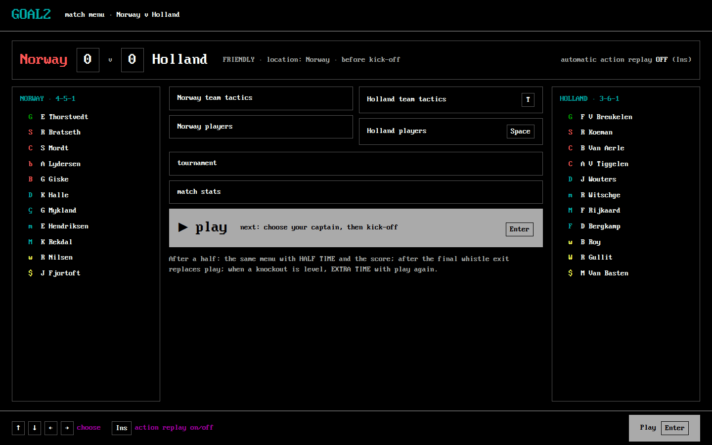
S16 Choose a player: captain, taker, penalty order
- Purpose: the stops where the original waits for one of your players: the captain before kick-off, the corner or goal-kick taker during play, the penalty order before a shoot-out.
- Shows: a headline that says what the match waits for ("Choose your captain to kick off"); the highlighted player's card; the eleven, the highlight starting on the computer's pick as in the original (T156-R1 step 43).
- Actions: ↑↓ player, Enter choose ("Captain: kick off"), C computer select; no key: the computer's pick stands after the original's wait (6–12 s for a taker in T156-R1). For the penalty order, Esc undoes a pick.
- Why the headline: the owner's playtest could not start the match because a captain was needed and nothing said so (#523). [designed: T157]
- Replaces:
captain-select,t156-043-captain,t156-044-captain-chosen,t156-265-round2-captain,t156-046-goal-kick-taker,t156-056-corner-taker,m244-shootout-order,m244-shootout-five-chosen. [confirmed: T156-R1 steps 43–47, 56–58, 151–152, 265–266; M244-G4C-07 step 56; M244-G4C-08 step 5; E031 C38–C38b; reviewed F030]
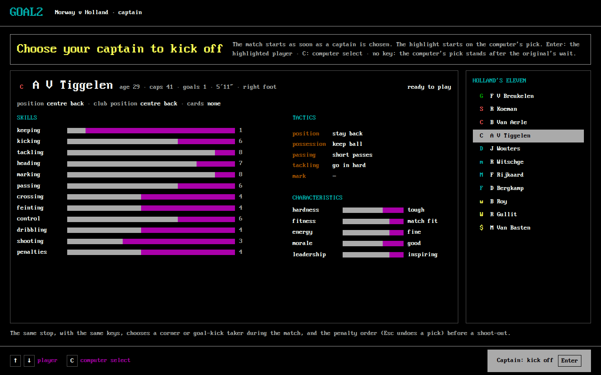
S17 Pitch
- Purpose: watch the match and intervene.
- Shows: the score, the minute, the kind of match and the last two events; the pitch with each player's role code (home red, away white, as the original draws them) and the ball; the commentary beside it.
- Actions: ↑↓ display (marks), ←→ speed, R result (quick result; it still stops at half time, injuries, extra time and the shoot-out), Space commentary (enlarges it), F9 sound, Esc / Enter bench. A replay shows REPLAY where R result is.
- Replaces:
match-live,match-commentary,injury-event,t156-045-kick-off,t156-058-taker-timed-out,t156-066-injury-and-booking,t156-178-replay-playing,t156-247-goal-replay,t156-254-goal-replay-goal,t156-267-quick-hang-on,m244-shootout-first-goal. [confirmed: T156-R1 steps 45–192, 247–255, 267; E031 C39–C40, C08; M244-G4C-08 step 19] - Departs [designed: owner decision 2, #526]: the commentary is always beside the pitch rather than only after Space (on a DOS 640×400 screen they could not both fit); the pitch is part of the window, not a second window.
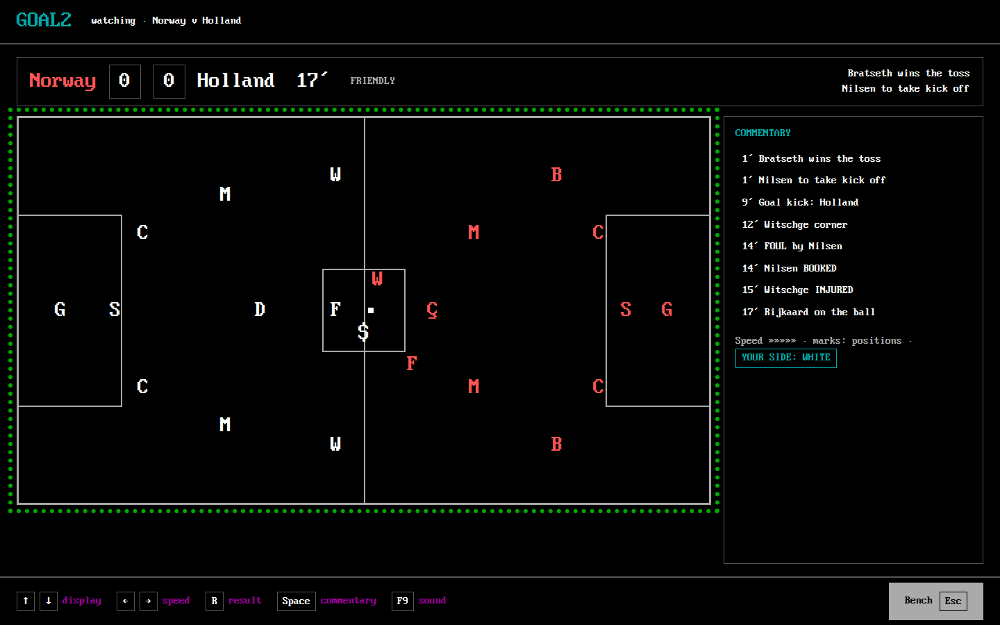
S18 Match stop
- Purpose: the questions and notices that stop the match: a goal (action replay?, save this goal?, its file name), SUBSTITUTION OPPORTUNITY when your player is injured, the other side's substitution, the penalty shoot-out.
- Shows: a box over the pitch with the event, the score and minute, the question and its answers.
- Actions: Y / N for a question; any key for a notice (the substitution opportunity's key opens the match menu, as in the original); the file name as in S21.
- Replaces:
t156-067-substitution-opportunity,t156-149-opponent-substitution,t156-175-replay-prompt,t156-176-save-goal-prompt,t156-177-goal-file-name,t156-274-quick-substitution-opportunity,e031-shootout-start,m244-shootout-prompt. [confirmed: T156-R1 steps 67–68, 149–150, 175–178, 274–275; E031 g1 step 3874; M244-G4C-07 step 55]
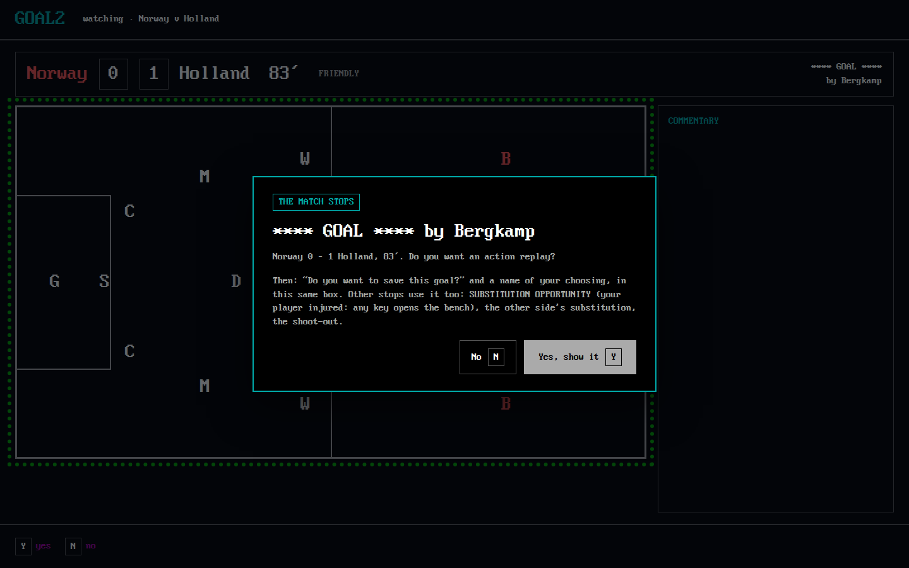
S19 Bench
- Purpose: substitutions, during a match and at its breaks.
- Shows: the card of the highlighted player; the mode, as the original names it ("make substitutions now", or "substitution requested" during play); substitutions left; the eleven and the bench.
- Actions: ↑↓ player, Enter take off / put on (in either order; the hint names which), or request / cancel a substitution in request mode; R, C positions; T his tactics (S09); Esc match menu. A refused substitution says why and waits for a key.
- Replaces:
squad-substitution-take-off,squad-substitution-put-on,squad-substitution-illegal,t156-074-bench-requested,t156-080-bench-request-cancelled,t156-124-halftime-bench,t156-132-substitution-made,t156-279-quick-bench,t156-301-quick-substitution-made. [confirmed: T156-R1 steps 74–81, 124–133, 279–301; E031 C41–C41k; E015-r0007 states 76, 82, 176]
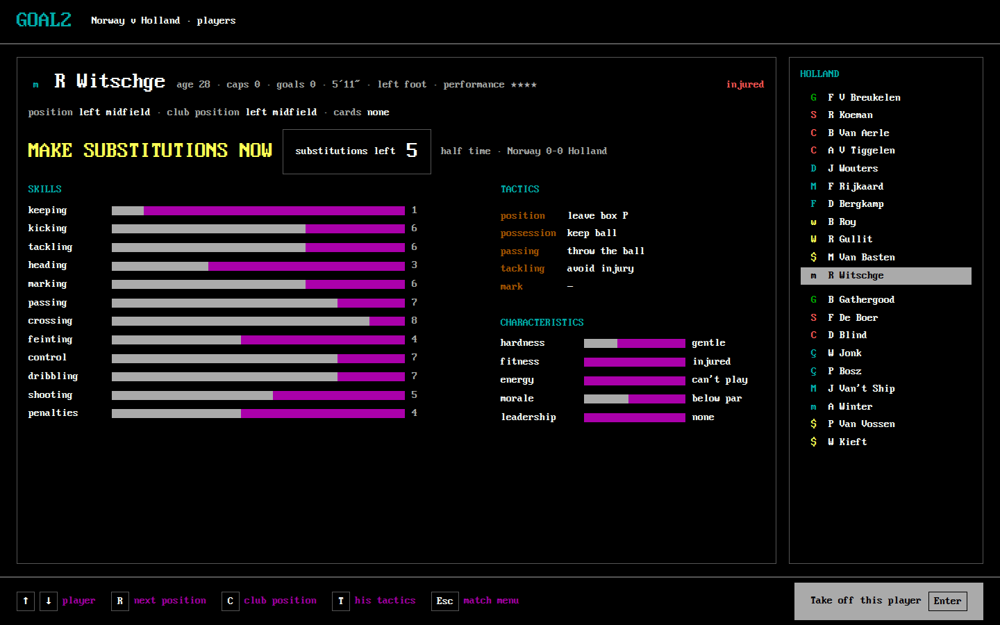
S20 Match board
- Purpose: the statistics at half time and full time, and a saved match summary.
- Shows: the score and half-time score, scorers and minutes, man of the match; corners, free kicks, penalties, shots, on target, saves, fouls, bookings, red cards, possession, territory. After a quick result a QUICK RESULT banner stands in place of the statistics, as in the original.
- Actions: Enter (hit any key) continue, Esc bench. After a watched match, exit asks save the match summary? (Y/N) and a name of the player's choosing (S21's box).
- Replaces:
t156-119-halftime-board,t156-192-fulltime-board,t156-270-quick-halftime,t156-310-quick-fulltime,match-summary-save-prompt,match-summary,t156-198-summary-prompt,t156-199-summary-file-name. [confirmed: T156-R1 steps 118–119, 191–199, 270, 310–313; E015-r0007 states 51, 207; E031 C24–C24b, C51]
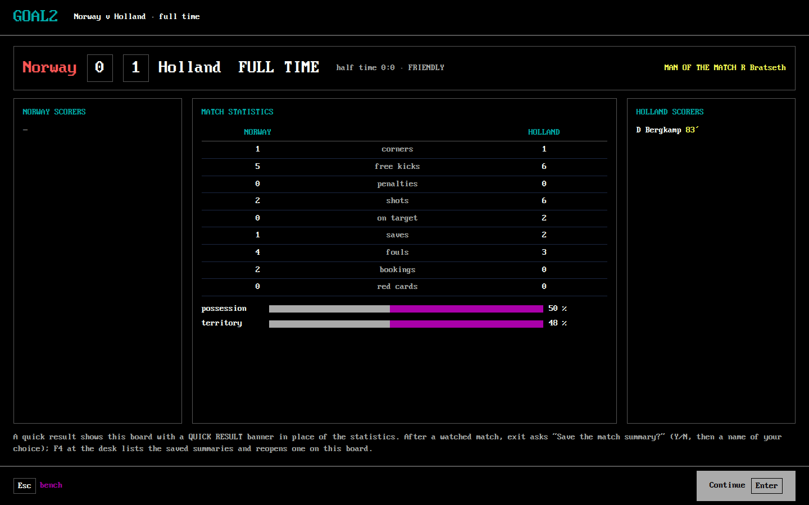
S21 Save, quit, load a goal or a summary
- Purpose: the name box and the yes/no questions of saving and quitting.
- Shows: over the current screen, the question and the proposed name (the last name used).
- Actions: F7 save: type or accept the name, Enter save, Esc cancel. F10 quit: Are you sure you want to quit? Y/N, then Do you want to save this game? Y/N. F3 / F4: the saved goals or summaries, listed by name; Enter opens one (S15, then S17 or S20).
- Departs [designed: owner decision 8, #526]: free names, shown in the lists, instead of the original's 8.3 file names (SAVED.GL, G-1.HIL, S-1.SUM), which were a DOS limit.
- Replaces:
save-game-name-entry,save-game-prompt,quit-confirm,t156-233-save-name-prompt,t156-237-save-name-typed,t156-239-quit-confirm,t156-240-quit-save-prompt,t156-245-load-goal-prompt. [confirmed: T156-R1 steps 233–241, 245–246; E031 C23–C26b; reviewed F030]
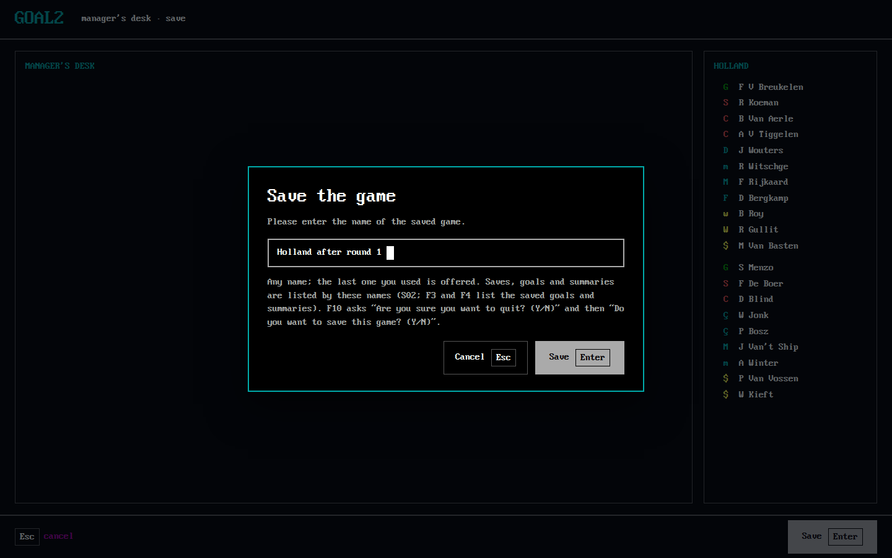
S22 Help
- Purpose: the original's help, as its F1 opens it.
- Shows: the original's own help text, from the GOAL.HLP imported on the first start (S01), in the mockups' font. No capture of the original's help viewer exists yet, so the viewer's pages and keys in the mockup are illustrative until one is made. [designed: owner, 2026-11-03, #526]
- Actions: F1 opens it, Esc closes it.
- Replaces: no captured screen. [confirmed: E031 C04–C04c; evidence gap: help viewer capture]
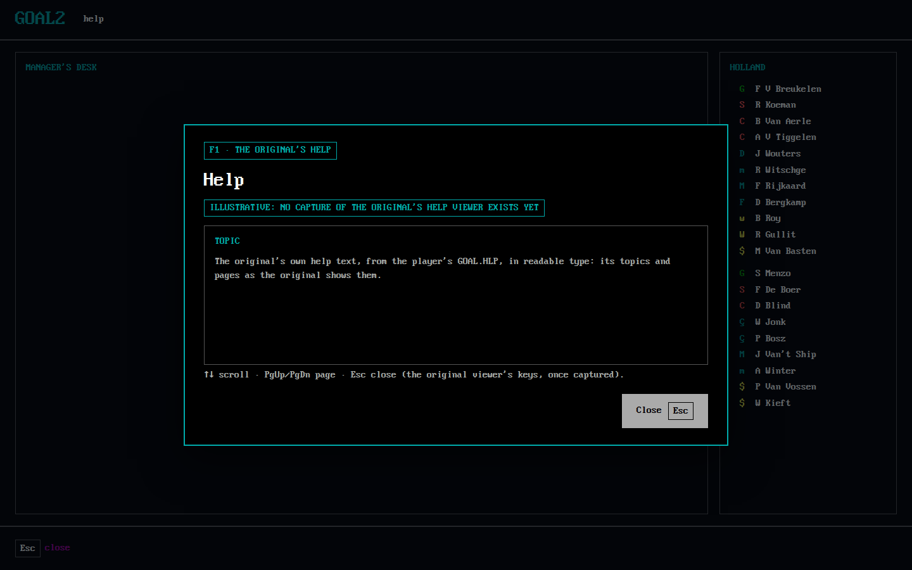
3. Rules for the whole UI
The rule. Follow the original exactly. Depart only where a DOS limit forced the original's way, or where the
owner hit a problem in the playtest. Every departure is marked [designed] with its reason. Everything below, and
every screen in section 2, applies it. [designed: owner, 2026-11-03, owner decisions, 2026-11-03, #526]
Navigation. [confirmed: T156-R1 steps 0–321]
- One screen at a time, as in the original. The manager's desk (S06) is the landing page and home: every action of the original's hub is on it, play next game included, and every management screen returns to it with Esc. There is no side bar of destinations, and no action hides behind another screen. [owner decision 1]
- The order of screens is the original's (section 1). goal2 adds only S01, the first-start import, because no original file ships with goal2 [designed: owner, 2026-11-02, T153; CLAUDE.md rule 14].
- Each screen has a title bar: the GOAL2 corner and the screen's name, as the original's logo corner and screen titles; the competition's banner where the original shows it (the desk, the tournament, the round).
The Enter hint. The right end of the bottom bar says what Enter does on the highlighted choice now, as the original's hint line does ("Hit ◄┘ to select option", "◄┘-move player", "Hit ◄┘ to watch match"). The cursor starts where the original's does: team info on the desk, play on the match menu, the computer's pick on the captain card. The hint is drawn as the original's highlight bar, light grey with black text. [confirmed: T156-R1 steps 13, 17, 42, 43, 224]
Stops. [designed: #523, the owner did not know that the match waited for a captain]
- Whenever the game waits for the player, the screen says what it waits for and which key answers it. A stop with a timeout (taker, captain, summary) says what happens with no key.
- No stop is silent and no stop hides in another window.
The match.
- Your own matches are watched by default, as in the original; no watch control is added. [owner decision 1]
- It is watched in the main window (S17), with the commentary always beside the pitch. [designed: owner decision 2] The questions and notices are boxes over the pitch (S18); half time and full time are the board (S20) and then the match menu (S15).
- Watch or quick result is the original's choice: the watch question where the original asks it (S15), and R on the pitch for a quick result. No other button. [confirmed: E031 C35, C08; T156-R1 step 267; owner decision 3]
- Speed, display and commentary keep the original's keys.
The look. The original's palette and a blocky font, on a modern layout. [designed: owner, 2026-11-03, #526: "try to mimic the color scheme of goal and try to have more of a retro feeling, maybe a blocky font is enough and we can keep the rest"]
Layout stays modern: the screens, boxes, flow and key bar of section 2.
Colours are the original's own sixteen-colour palette, read from the captures by palette.py. Each colour keeps the meaning it has in the original:
Role Colour Read from (image, area x0, y0, x1, y1) What the area shows ground #000000t156-013-hub.png (0, 0, 640, 400) the whole hub screen text, bright #fffffft156-013-hub.png (20, 110, 100, 128) the manager's name 'K Ees' text, normal #aaaaaat156-224-fixture-list.png (430, 146, 520, 161) 'qualifying' in the fixture list frame lines #aaaaaat156-013-hub.png (505, 20, 509, 390) the frame of the hub's squad strip frame lines, dark grey #555555t156-013-hub.png (0, 95, 10, 400) the frames on the hub's left headings, cyan #00aaaat156-224-fixture-list.png (140, 80, 240, 95) 'and results' under the fixtures title card headings, red #aa0000t156-014-squad.png (8, 160, 60, 174) 'skills' on the squad card card labels, brown #aa5500t156-014-squad.png (8, 177, 70, 190) 'keeping' on the squad card key hints, magenta #aa00aat156-013-hub.png (205, 270, 300, 305) 'Use ↑↓ to find option' on the hub highlight bar #aaaaaat156-013-hub.png (362, 103, 442, 127) the highlighted 'team info' option values, yellow #ffff55t156-224-fixture-list.png (104, 130, 530, 370) the team names of the fixture list title banner, light red #ff5555t156-013-hub.png (100, 5, 440, 90) the 'European Championship' banner goalkeeper #00aa00t156-013-hub.png (510, 32, 520, 46) V Breuklen's initial in the squad strip defence #ff5555t156-013-hub.png (510, 48, 520, 62) Koeman's initial midfield #00aaaat156-013-hub.png (510, 96, 520, 110) Wouters's initial attack #ffff55t156-013-hub.png (510, 192, 520, 206) Van Basten's initial bar, filled #aaaaaat156-014-squad.png (80, 177, 270, 190) the keeping bar bar, empty #aa00aat156-014-squad.png (120, 241, 270, 254) the marking bar's empty part pitch lines #aaaaaat156-045-kick-off.png (18, 100, 22, 350) the left touchline pitch surround #00aa00t156-045-kick-off.png (0, 80, 640, 100) the band above the pitch home side #ff5555t156-045-kick-off.png (362, 222, 380, 240) a Norway player's letter at kick-off away side #fffffft156-045-kick-off.png (170, 222, 188, 240) a Holland player's letter at kick-off [confirmed:
python3 docs/design/ui-2026-11/palette.pyon the captures named in the table]Role codes are coloured by line, as in the original: green goalkeeper, red defence, cyan midfield, yellow attack. [confirmed: goal2-archaeology F002 R011; docs/vision-266/role-codes; the table above]
On the pitch, the home side is light red and the away side white, as in the original. [confirmed: T156-R1 step 45]
Font: "PxPlus IBM VGA 8x16" by VileR (The Ultimate Oldschool PC Font Pack v2.2, int10h.org), a blocky VGA-style font under CC BY-SA 4.0. It is vendored in mockups/fonts/ with its licence and provenance. It is not the original game's font, and no byte of it comes from GOAL.EXE (CLAUDE.md rule 14).
Text size: designed at 1440×900. Text is 16 px, the font's own 8×16 cell, and headings and names are 32 px, twice the cell; larger titles are 48 or 64 px. Only whole multiples are used, so the blocks stay sharp. At other window sizes the page scales as a whole and keeps its layout, as today's fixed pages do (T101).
Names, numbers and role codes are never abbreviated beyond the original's own forms.
Every colour pairs with text or a symbol, so nothing depends on colour alone.
The keyboard.
- Every original key works where the original has it: arrows, Enter, Esc, Space, Ins, Y/N, C, R, T, F1–F4, F7, F9, F10, Shift+R (#423).
- goal2 adds only Enter on Continue (S02, owner decision 4) and Tab to the optional starting year (S03, owner decision 9). No added key changes an original key's meaning.
- Every key of a screen is on its bottom bar, as the original's bottom line lists them.
- The mouse does what the keys do: every option, row and button can be clicked. [designed: owner, 2026-11-03, #526]
4. What today's window keeps, changes and drops
Today's window is the default route a player gets from the portable build: the import dialog, the Launch
window, then the core route's main window (goal2/desktop/core_window.py), with the pitch in a separate pygame
window. [confirmed: goal2/desktop/main.py:79–134; goal2/desktop/window.py:556–561]
| Today's screen | Keeps | Changes | Drops |
|---|---|---|---|
Import dialog (data_setup.py) |
the check and the copy, the plain-words errors | becomes S01, with each file's check on screen | — |
Launch: Return to your country (launch.py) |
the saved career summary, Resume, retry | becomes S02: Continue, the saves as a list, the title's Y/N | the path field ("Open another save") |
| Launch: Choose your country | the 128 countries, the card | becomes S04: groups of 16, Ins, Space players, the name on the same screen | the 1990/1992 start-year list, replaced by S03's optional year field (owner decision 9) |
| Launch: Review before starting | the manager name (14 characters) | the name moves into S04 | the review page |
| Launch: bulletins | the three-column bulletin | becomes S05 | — |
| Main window: top bar | country, manager, year and stage, next match | as in section 3 | — |
| Main window: side bar (Country, Team, Pool, Fixtures & match, Save; Ctrl+1–5) and SHOW MATCH (F8) | — | the desk's six options take its place | the side bar, Ctrl+1–5, F8 |
| Main window: status line | — | each screen says what it waits for itself | the status line |
| Country (the desk) | the desk's panels and its six options; history | becomes S06, the landing page with all six actions on it (play next game included) and the cursor on team info; history becomes S13 | — |
| Team: card, own tactics, team tactics | the card, R / Shift+R / C, T, F2 | becomes S08, S09, S10 | — |
| Pool: card, compare, suggest | the pool card; the exchange | joins S08 (←→ squad / pool), the exchange shown before it is made | Compare as a separate view; Suggest becomes Ins (the assistant's 20) |
| Fixtures & match: fixture list, tournament | the boards | become S11 and S12, reached from the desk | — |
| Round pages (Next > (Enter)) | the order of the pages | become S14, S20, S12, S05 | the generic page titles |
| Captain view with Watch this match toggle | the eleven, the suggested captain, Enter, C | becomes S16, which says the match waits for it; C bound | the Watch toggle: own matches are watched, the original's watch question and R remain (owner decisions 1, 3) |
| Pre-match team (bench, pre-match) | the swap | joins S15's players and S19 | — |
| Pitch window (pygame) | its keys | moves into the main window as S17 | the second window, its fixed caption |
| Substitution notice, action replay, takers, shoot-out order | the questions and their keys | become S18 and S16 | — |
| Half time / bench | substitutions left, make substitutions now | becomes S19 and S20 | — |
| Match summary | the board, the save question | becomes S20 with S21's name box; N bound | — |
| Save page (path, Save F7) | F7 | becomes S21's name box, with F10 quit | the path field |
5. The mapping of every original screen
Every classified screen of the screen inventory and every original
image embedded in the chapters is in one row: the new screen that replaces it, or dropped with the reason.
check_mapping.py checks this table. [designed: T157]
| New screen | Original screens it replaces | Note |
|---|---|---|
| S01 | — | goal2 adds it: the first-start import (T153) |
| S02 | title-load-prompt, m244-load-name, t156-243-load-name, file-not-found-prompt |
title, load, error |
| S03 | title-player-count, t156-002-hang-on-a-tick |
managers, busy |
| S04 | country-select, country-select-name-entry, t156-005-country-holland, t156-006-name-entry, t156-010-name-typed |
country, name |
| S05 | bulletin, t156-011-bulletin-welcome, t156-012-bulletin-groups, t156-200-bulletin-after-match, t156-317-bulletin-round2, m244-elimination-bulletin |
news |
| S06 | manager-menu, t156-013-hub, t156-201-hub-after-round1, t156-244-loaded-hub, t156-318-hub-round2, m244-holland-menu, m244-finals-stage-hub |
hub |
| S07 | m244-team-info-2030, m244-team-info-players-2030 |
competitors |
| S08 | m244-squad, m244-squad-next, m244-pool, m244-pool-next, m244-position-next, m244-position-club, t156-014-squad, t156-016-pool, t156-017-pool-put-here, t156-029-pool-pick-done, t156-202-card-recovered, t156-320-card-recovered-round2 |
squad, pool |
| S09 | m244-individual-tactics, m244-position-tactic-toggle, mark-protect-zone, mark-named-opponent, squad-substitution-tactic, t156-030-player-tactics |
player tactics |
| S10 | team-tactics, m244-team-tactics, t156-033-team-tactics, t156-034-team-tactic-changed |
team tactics |
| S11 | fixtures-watch, fixtures-auto, m244-fixtures, m244-fixtures-watch, t156-224-fixture-list |
fixtures |
| S12 | m244-tournament-group-f, m244-tournament-group-g, m244-world-finals-bracket, m244-world-qualifying-a, m244-world-qualifying-b, m244-final-qualifying-table, t156-227-tournament-europe, t156-228-tournament-americas, t156-229-tournament-finals, t156-230-tournament-championship, t156-316-group-table |
tournament |
| S13 | m244-history |
history |
| S14 | round-playing, round-results, t156-041-round1-results, t156-262-round2-results-rolling, t156-263-round2-results |
round |
| S15 | match-menu, match-menu-halftime, match-menu-fulltime, match-watch-prompt, t156-042-match-menu, t156-048-menu-after-taker, t156-193-fulltime-menu, t156-264-round2-match-menu, t156-246-goal-replay-menu, m244-knockout-halftime, m244-extra-time-menu, m244-extra-time-halftime |
match menu |
| S16 | captain-select, t156-043-captain, t156-044-captain-chosen, t156-265-round2-captain, t156-046-goal-kick-taker, t156-056-corner-taker, m244-shootout-order, m244-shootout-five-chosen |
captain, takers, order |
| S17 | match-live, match-commentary, injury-event, t156-045-kick-off, t156-058-taker-timed-out, t156-066-injury-and-booking, t156-178-replay-playing, t156-247-goal-replay, t156-254-goal-replay-goal, t156-267-quick-hang-on, m244-shootout-first-goal |
pitch |
| S18 | t156-067-substitution-opportunity, t156-149-opponent-substitution, t156-175-replay-prompt, t156-176-save-goal-prompt, t156-177-goal-file-name, t156-274-quick-substitution-opportunity, e031-shootout-start, m244-shootout-prompt |
stops |
| S19 | squad-substitution-take-off, squad-substitution-put-on, squad-substitution-illegal, t156-074-bench-requested, t156-080-bench-request-cancelled, t156-124-halftime-bench, t156-132-substitution-made, t156-279-quick-bench, t156-301-quick-substitution-made |
bench |
| S20 | t156-119-halftime-board, t156-192-fulltime-board, t156-270-quick-halftime, t156-310-quick-fulltime, match-summary-save-prompt, match-summary, t156-198-summary-prompt, t156-199-summary-file-name |
boards, summary |
| S21 | save-game-name-entry, save-game-prompt, quit-confirm, t156-233-save-name-prompt, t156-237-save-name-typed, t156-239-quit-confirm, t156-240-quit-save-prompt, t156-245-load-goal-prompt |
save, quit, load goal |
| S22 | — | goal2 adds it in place of the original's help viewer, of which no capture exists |
| dropped | dos-shell |
The emulator's DOS prompt before GOAL2 starts: not a game screen; goal2 starts on S01 or S02 |
6. Decisions (owner, 2026-11-03)
The owner answered the design's nine questions on #526 (owner decisions, 2026-11-03, #526); this design applies them.
- The desk is the original's landing page with every action visible, play next game included; own matches are watched by default; no watch control the original lacks; the cursor starts where the original's does.
- The pitch is in the main window, with the commentary always beside it.
- Watch or quick result as the original: its question where it asks one, R on the pitch, no extra button.
- Load: Continue plus a list of saves, in place of typing a file name.
- Managers: 1 to 6, hot seat, as the original.
- Autopilot: decided later; left out of this design.
- The look: modern and readable, with the original's layout, colour meanings and role codes. Revised the same day (below).
- Save names: free names, shown in the save list, not the 8.3 names.
- The start year: the PC clock's year by default, as the original (NG-9), changeable in one optional field.
Approval, 2026-11-03 (the owner, on #526: "let us keep the design"), with three changes this design applies:
- Mouse support stays, as the owner's decision.
- GOAL.HLP joins the first-start import (S01), and F1 shows the original's help from it (S22). The change to the import is made in T153's code, in a separate PR.
- The look: the original's colour scheme and a retro feel. The mockups use the original's palette, read from the captures, and a blocky VGA-style font (PxPlus IBM VGA 8x16, CC BY-SA 4.0). The layout and everything else stay (the look).
Owner decisions, 2026-11-03 (on T162's questions, #536: "do as proposed"):
- S22's text box fills most of the screen, not the mockup's nine lines: the original's help is a long text. Made in T163.
- Adding GOAL.HLP later: the desk (S06) gets a re-import data entry, which opens S01 over the imported folder. Made in T164. Until then, F1's message names the re-import command.
Owner decisions, 2026-11-03 (on gaps that T163 and T165 found):
- S05 waits for the original's news. Until Track B ports it (U2, #509), a new career goes from S04 to the home screen. goal2 writes no bulletin of its own.
- Ins (the assistant's 20) says coming later until the original's assistant (
0791:DC7E) is ported in Track B's U3. There is no Unicorn and no stand-in rule meanwhile.
Owner decisions, 2026-11-03 (on the main session's gap audit, #509):
- The ZIP keeps today's window as its default until the Python route plays a whole season (T170). T169 adds the new window beside it, for the playtest. No build plays less than the one before it.
- Four of today's extras stay, though the original lacks them. Each is marked
[designed]where it departs:- Pool search and filter on S08: by name, accent-insensitive, and by position.
- A standalone friendly between any two countries, outside a career, from S02.
- Renaming the manager after the career started, from the desk.
- A new career from inside a game, from the desk, with the unsaved-progress question first.